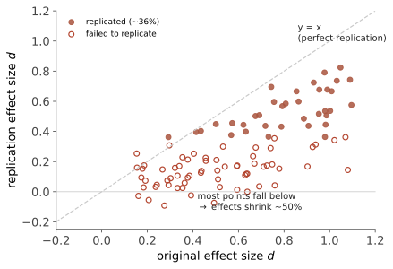

方法 III · 复现危机与证据分级
本站的灵魂页，也是任何 2020 年代之后写的心理学教材必须有、而多数仍然没有的一页。2011 年起，心理学开始系统检查自己的经典结论——结果是这门学科最痛苦、也最光荣的十五年。
1. 引爆点与体检结果
三件事同时发生在 2011–2015：Bem 发表"人能预知未来"的论文（用的全是当时标准的方法与统计——如果标准方法能证明超能力，那标准方法有问题）；Stapel 数据造假案曝光；Simmons 等人发表《False-Positive Psychology》，演示了研究者自由度如何让完全无效的假设轻松做出 \(p<0.05\)。
体检（Open Science Collaboration, 2015）：100 项心理学研究的大规模复现——
- 原始研究 97% 报告显著结果；复现成功率约 36%；
- 复现的效应量平均约为原始的一半；
- 社会心理学比认知心理学更惨（约 25% vs 50%）。
其后多项大规模项目（Many Labs 系列、Reproducibility Project、Registered Replication Reports）反复给出同量级结论。

2. 病因：不是造假，是激励与统计
造假是极少数。真正的病因是一套人人都在无意中使用的做法（QRPs，可疑研究实践）：
| 病 | 做法 | 后果 |
|---|---|---|
| p-hacking | 试多个分析、多个变量、多个排除标准，报告好看的那个 | 假阳性率从 5% 飙到 50%+ |
| HARKing | 看到结果后再"提出"假设，写成事先预测 | 把探索伪装成检验 |
| 发表偏倚 | 期刊只发显著结果，零结果进抽屉 | 文献本身是"幸存者"的集合 |
| 低功效 | 小样本成为常态（典型功效仅约 0.35） | 显著结果的效应量必被高估（winner's curse，第 02 页） |
关键认识：这些做法在当时并不被视为作弊——它们是"讲好一个故事"的常规操作。危机的本质是激励结构（发表 = 新颖 + 显著）与统计现实（真效应小、噪声大）的碰撞。🔗 这与你数学站统计 IV 的多重检验、时序页的伪回归是同一堂课的三个现场。
3. 名单：哪些倒了、哪些摇了、哪些站着
【倒】复现失败或有硬伤，但仍在流行文化与旧教材里：
- 斯坦福监狱实验（Zimbardo 1971）：从未被成功复现；2018 年公开的录音与档案显示"狱警"受到实验者的明确引导、部分表现为配合演出；BBC 的复现（2002）得到近乎相反的结果（囚犯反压狱警）。它至今仍出现在大量教材中作为"情境力量"的证据——本站把它降级为"科学史与研究伦理案例"，不作为情境影响的证据（第 15 页详述）；
- 自我损耗（ego depletion）：意志力像肌肉会耗竭——Hagger 等 2016（23 实验室，n≈2,141）与 Vohs 等 2021（36 实验室，n≈3,531）两次多实验室复现均基本零效应。少数变体与更长耗竭任务的争论仍在，但"畅销书版本的自我损耗"已不成立；
- 权力姿势（power posing）：第一作者 Carney 2016 公开声明不再相信该效应；激素与冒险行为的强主张已死，仅"主观感觉更有力"这类小效应可能存活；
- 学习风格匹配：设计良好的研究一致失败（第 01 页已点名）。
【摇】效应可能真实，但远小于流行说法 / 强条件依赖：
- 棉花糖实验：Watts 等 2018 扩大样本并控制家庭背景后，延迟满足对后来成就的预测力大幅缩水，相当部分由社会经济地位与早期认知能力解释——"等待的孩子"很可能只是"来自承诺可兑现的家庭"的孩子；
- 成长型思维：真实但平均效应约 \(d \approx 0.08\)，主要出现在特定人群（低成就、贫困学生）与高质量实施——流行版本夸大约一个数量级；
- 多数"启动效应"（priming）的社会行为版本（如读老年词汇走得慢）：复现困难，学界共识已从"稳固现象"退到"存疑"。
【稳】经得起大规模复现的核心结论（本站会反复引用它们）：
- 间隔重复与提取练习优于重读（第 09 页）；
- 经典/操作性条件反射的基本规律（第 08 页）；
- 认知偏差的主体部分：锚定、可得性、框架效应（第 10 页）；
- 大五人格的因子结构与其对生活结果的预测（第 14 页）；
- 心理治疗总体有效（\(d \approx 0.5\) 量级）、CBT 在多种障碍上有效（第 17 页）；
- 睡眠剥夺损害认知与情绪（第 06 页）。
4. 改革：这门学科怎么自救的
预注册（分析方案先公开再收数据——把探索与检验分开）、注册报告（期刊在看结果之前决定是否发表，从根上切断发表偏倚）、数据与材料开放、多实验室协作（Many Labs）、样本量与功效要求提高、效应量与置信区间取代唯 p 值。
成效：新一代研究的样本量与预注册比例显著提升；但改革不均匀——旧结论的清理远慢于新研究的规范化，这就是为什么"教材滞后"仍是今天读心理学的第一风险。
5. 给读者的操作手册（本页最实用的部分）
看到任何心理学结论，五问：
- 样本多大？ \(n < 50\) 的组间实验，结论基本当作"值得后续检验的线索"；
- 预注册了吗？复现过吗？ 独立团队复现 > 原团队自我复现 > 从未复现；
- 效应量多少？ 只报"显著"不报 \(d\)/\(r\) 的，退一步；
- 样本是谁？ WEIRD 大学生的结论不要直接外推（第 02 页）；
- 是相关还是实验？ 媒体最爱把相关写成因果（第 02 页）。
最后一句：这一页看起来像在拆学科的台，实际相反——能列出这样一份"我们错在哪"的清单，是心理学比很多学科更成熟的证据。经济学、医学、癌症生物学的复现率并不更好，只是没这么系统地公开清算过。判断一门科学是否健康，不看它有没有犯错，看它有没有纠错的机制。
Sources：SPE 的复现状况与批评 · 复现危机综述 · 成长型思维效应量
装备完毕。下一页开始进入内容主体：先从最硬的一层——生物基础。